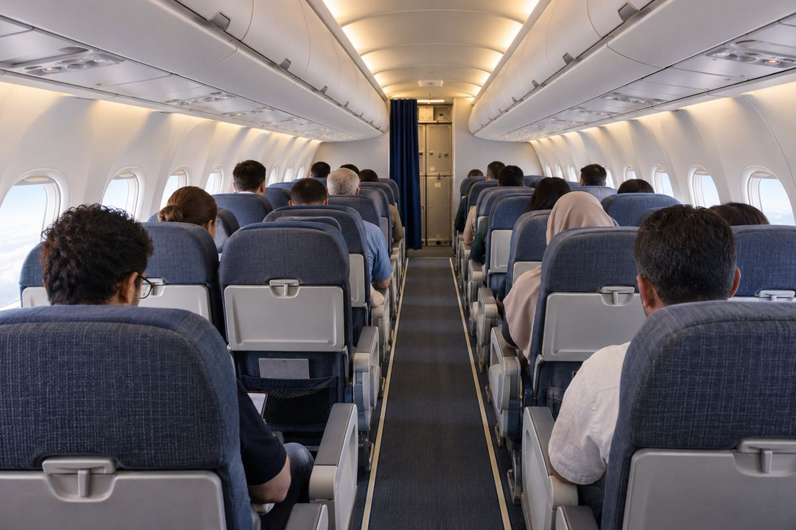

항공 / EXPLAINED
플라이나스, 메디나–다마스쿠스 주 2회 신설…11월 19일 예정
시리아 연결망은 여섯 노선으로 늘지만 새 구간은 매일 운항하지 않는다.

사우디 저비용항공사 플라이나스가 메디나와 시리아 다마스쿠스를 잇는 직항을 11월 19일부터 주 2회 운항한다고 11월 8일 발표했다. 이번에 추가되는 것은 메디나 출발 구간이다. 이미 운항하는 리야드·제다·담맘 노선 전체가 새로 생기는 것은 아니다. 11월 12일 현재 이 기사가 확인한 것은 공식 취항 계획이며, 개시 이후의 실제 운항 이행 여부는 별도 확인이 필요하다.
플라이나스는 2007년 출범한 사우디 항공사로, 국내선과 국제선에서 저비용 운송 모델을 운영한다. 메디나는 성지 방문과 지역 이동 수요가 함께 있는 도시다. 직항이 생기면 다른 사우디 도시를 거치는 이동을 줄일 가능성이 있다. 다만 방문 목적이 무엇이든 항공권 구매가 입국 자격이나 방문 허가를 대신하지 않으며, 필요한 서류는 여행자의 국적과 여정에 맞춰 확인해야 한다.
발표에서 회사는 새 편을 더하면 사우디–시리아 연결이 주 30회, 여섯 노선이 된다고 설명했다. 내역은 리야드–다마스쿠스 주 14회, 제다–다마스쿠스 7회, 담맘–다마스쿠스 3회, 리야드·제다에서 알레포로 향하는 두 노선 합계 4회다. 여기에 메디나–다마스쿠스 2회를 더하면 30회가 된다. 30회는 한 도시에서 이용할 수 있는 빈도가 아니라 여러 출발지와 목적지를 묶은 연결망 수치다.
이 비교 범위를 구분해야 하는 이유는 여행 일정을 짜는 데 있다. 메디나에서 출발하는 승객에게 주 30회라는 합계가 곧 원하는 날짜의 좌석을 뜻하지는 않는다. 새 노선만 보면 주 2회여서 체류 기간과 귀국 날짜가 운항 요일에 크게 좌우될 수 있다. 공식 보도자료에는 새 노선의 구체적인 편명과 시각표가 없어 본 기사에서 임의로 요일이나 소요 시간을 제시하지 않았다. 날짜별 예약 가능 여부가 다음 확인 단계다.
항공사는 지난해 6월 다마스쿠스 운항을 재개한 이후 시리아 시장을 넓히는 과정이라고 설명했다. 이번 발표의 2026년을 기준으로 지난해는 2025년이다. 기존 재개 시점과 메디나 노선의 신규 취항 시점은 다르다. 회사 전체에 대해 제시한 주 2000회 이상 운항, 38개국 80곳 이상 목적지 등의 수치 역시 시리아 구간만의 규모로 읽으면 안 된다. 노선 확대의 배경을 보여 주는 회사 자체 설명이다.
저비용항공사의 직항을 비교할 때는 경유 횟수뿐 아니라 포함 서비스를 따로 살펴야 한다. 수하물 허용량, 좌석 선택, 변경과 환불 조건은 선택 운임에 따라 달라질 수 있다. 가족이나 일행의 출국 날짜를 맞추는 경우에는 표 가격과 함께 귀국편의 선택 폭을 비교할 필요가 있다. 이는 운임 구조를 읽는 일반적인 기준이며, 이번 노선의 특정 요금이나 서비스를 직접 이용해 평가한 내용은 아니다.
편집부는 노선망의 합계보다 메디나 출발자에게 새 직항이 생긴다는 점을 핵심 변화로 본다. 그러나 발표만으로 앞으로의 운항 안정성이나 모든 여행자의 이동 가능성을 확정할 수는 없다. 출발 전 항공사의 운항 상태와 목적지의 최신 입국 안내를 다시 확인해야 한다. 신규 노선 공지, 특정 날짜의 예약 확정, 실제 출발은 각각 독립된 사실로 구분해 판단할 필요가 있다.